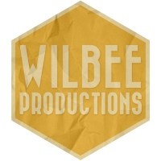
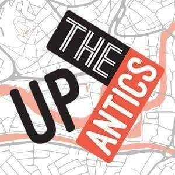
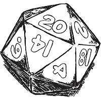

I'm Mike Hayward;


(strictly digitally)
a Front End Web Developer based in the UK.
And my Developer Belt
| Modular code |
Node JS for automation
|
| Git version control: see my GitHub |
Adobe Suite:
|
My work
-

Wilbee Productions
A website for an up-and-coming film production company.
-

Up the Antics
I've been doing live comedy since 2011, and my group had a rebrand. The site is to help our fans stay connected and to drive advance ticket sales.
-

Modern / Sci Fi name generator
Naming characters is hard, and so is getting karma on Reddit, so I built a name generator for use in roleplaying games.
I love to create experiences — whether it's building a website, recording voices for a show, hosting a game of Dungeons & Dragons, or even designing board games.
I'm always looking for opportunities to do just that: create. I build for the end-user and take pride in my work.
Who I am
First and foremost, I'm a nerd. I play Tabletop Roleplaying Games, I read Dark Fantasy novels and I take life advice from fictional characters...
When you cut pieces out of the truth to avoid looking like a fool you end up looking like a moron instead.
Burrich (Assassin's Apprentice by Robin Hobb)
There is a way out of every box, a solution to every puzzle; it's just a matter of finding it.
Jean Luc Picard
I'm the kind of bloke who would change their Alexa activation word to 'Computer' and act like be the coolest kid in the room.
That doesn't mean I'm stuck to screens and pages all day. I'm also a sketch comedy performer and podcaster.
How I Got Here

Creative Writing
BA Hons 2:1
Creative Writing
BA Hons 2:1
From doing a creative degree (and finding the most joy in working with publishing software), I started to learn a lot about Wordpress and Google's Blogger CMS, and even started running my own website about PC Gaming on a budget.
The problem was I was constantly fighting the interface to get it to look how I wanted. For a while, I stuck with trying to work within an obviously restricted system (Wordpress is great, but not for the things I wanted it to do — for my budget at the time.)
I knew that if I wanted to make websites and create content the way I wanted to reach people, I would have to create my own platform.
... turns out, much to one Italian plumber's delight, that I love making platforms!
Why I Got Here
The more my comedy group gained in popularity, the more we talked about getting our website professionally done. I took up the mantle and decided I would teach myself to code to the required standard.
Building the first draft of that website was frustrating, painfully slow and made me realise just how much of a mountain I had to climb.
It was also incredibly fun. Who knows, perhaps I'm one of those masochistic types that gets a kick out of margin and padding.
Anyway, that website has since undergone a revision, and I have yet another revision planned for it in the near future, after taking an online course.
Where I want to go
I want to gain further experience and a firm grounding in the field through learning from other developers, as well as in my own time. Then, I'm looking towards app development. React is next on my list.